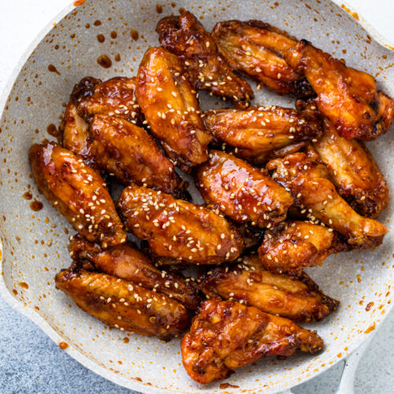

Chicken wings

Yummy chicken wings that are so easy
to fix on the stove top or in an electric skillet.
Ingredients
- 1 cup water
- ½ cup white sugar
- ⅓ cup soy sauce
- 2 tablespoons peanut butter
- 1 tablespoon honey
- 2 teaspoons wine vinegar
- 1 tablespoon minced garlic
- 12 large chicken wings,
tips removed and wings cut in half at joint
- 1 teapsoon sesame seeds,m or to taste
(Optional)
Steps
-
In an electric skillet or a large skillet over medium heat,
mix together the water, sugar, soy sauce, peanut butter,
honey, wine vinegar, and garlic until smooth and the sugar
has dissolved. Place the wings into the sauce, cover,
and simmer for 30 minutes. Uncover and simmer until
the wings are tender and the sauce has thickened,
about 30 more minutes, spooning sauce over wings occasionally.
Sprinkle with sesame seeds.